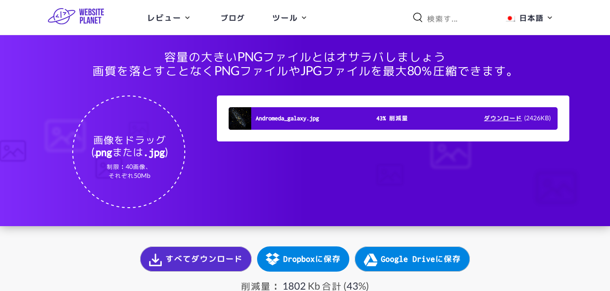

e-yuuki.orgの文書を書くときに気をつけていることをまとめます。したがってHTML5の範疇を超える話題も含まれます。ベストプラクティスを集めたわけではありません。W3Cの勧告やValidatorの更新によって都度変更される可能性があります。
W3C Recommendationに従って書きます。最新のRecommendationはHTML 5.2。HTML 5.3がWorking DraftからRecommendationになり次第ソースコードをアップデートします。
文書を書いてWebに公開する際The W3C Markup Validation Serviceを使ってHTMLコードを検査します。Web上のサービスではなく手元で検査したい場合はThe Nu HTML Checkerがおすすめです。ビルド方法はNetBSDでNu HTML Checkerをビルドするを参照してください。Gitを使っているのであれば、Gitフックのpre-commitスクリプト内でこのソフトウェアを使うと良いでしょう。以下はpre-commitスクリプトの一例です。chmod +xコマンドで実行権限を与え、変数の値は適宜変更してください。
#!/bin/sh
java="/usr/pkg/bin/openjdk8-java"
gitdir="/home/uki/src/github.com"
validator_dir="$gitdir/validator/validator"
git diff --cached --name-only --diff-filter=AM HEAD \
| grep 'html$' \
| xargs $java -jar $validator_dir/build/dist/vnu.jar個人的には後者のThe Nu HTML Checkerの利用を推奨します。逐一Webブラウザ経由でコードをチェックするのは面倒ですし、commit前にコードを検査することで正しくないコードがpushされるのを予防でき自信を持ってデプロイできます。
公開後はPageSpeed Insightsからページのスコアを確認し、速度が改善できそうな箇所を探します。不要なインデントによるスペース／タブ文字の削除はその代表例です。
日本語の校正にはtextlintを使います。pkgsrc(7)ではtextlintがパッケージとして提供されていません。そのためlang/npmパッケージをインストールし、npm(1)経由でtextlintとそのルールセットをインストールする必要があります。pkgsrc-2018Q4ではlang/npmパッケージをビルドすると途中でSegmentation Faultが起きたのですが、pkgsrc-2019Q1からは正常にビルドできるようになりました。
npm(1)からtextlintとそのルールセット、HTMLプラグインをインストールするには次のシェルスクリプトを実行してください。
#!/bin/sh
cmd="npm"
cmd_opt="install -g"
targets="textlint
textlint-filter-rule-whitelist
textlint-rule-no-start-duplicated-conjunction
textlint-rule-no-doubled-conjunction
textlint-rule-ng-word
textlint-rule-no-dead-link
textlint-rule-terminology
textlint-rule-max-ten
textlint-rule-no-doubled-joshi
textlint-rule-no-double-negative-ja
textlint-rule-ja-no-redundant-expression
textlint-rule-ja-no-abusage
textlint-rule-sentence-length
textlint-rule-first-sentence-length
textlint-rule-no-dropping-the-ra
textlint-rule-no-doubled-conjunctive-particle-ga
textlint-rule-no-doubled-conjunction
textlint-rule-ja-hiragana-keishikimeishi
textlint-rule-ja-hiragana-fukushi
textlint-rule-ja-hiragana-hojodoushi
@textlint-ja/textlint-rule-no-insert-dropping-sa
textlint-rule-prefer-tari-tari
textlint-rule-preset-jtf-style"
for package in $targets; do
$cmd "$cmd_opt" "$package"
donetextlintの設定ファイル$HOME/.textlintrcを次のように書きます。設定内容は『JTF日本語標準スタイルガイドのルールセットで文章をチェックできるtextlintプリセット』、『文書執筆の指南書で解説されている問題点を textlint で発見する』、『WebサイトのHTMLをtextlintでチェックする』を参考にしました。
{
// HTMLプラグインを有効にする
"plugins": [
"html"
],
"rules": {
// 一文の「、」を3つに制限
"max-ten": {
"max" : 3
},
// 同じ表現から文を開始しすぎない
"no-start-duplicated-conjunction": {
"interval" : 2 // interval of sentences
},
// 逆説の接続助詞「が」を検知
"no-doubled-conjunctive-particle-ga": true,
// 同じ接続しが連続して出現していないかを検知
"no-doubled-conjunction": true,
// 「の」の多用を検知
"no-doubled-joshi": {
"min_interval" : 1,
"strict": false,
"allow": []
},
// 表記ゆれの検知
"terminology": {
// Load default terms (see terms.json in the repository)
"defaultTerms": true,
// Syntax elements to skip. Overrides the default
"skip": ["Blockquote"],
// List of terms
"terms": [
// Exact spelling including the case
"JavaScript",
"ESLint",
"Sass",
"Less",
"npm",
// RegExp (case-insensitive) → replacement
["front[- ]end(\\w*)", "frontend$1"],
["back[- ]end(\\w*)", "backend$1"],
["web[- ]?site(s?)", "site$1"],
["hot[- ]key", "hotkey"],
["repo\\b", "repository"],
["CLI tool(s?)", "command line tool$1"],
["build system(s?)", "build tool$1"],
["id['’]?s", "IDs"],
["(\\w+[^.?!]\\)? )webpack", "$1webpack"],
["(\\w+[^.?!]\\)? )internet", "$internet"]
],
},
// JTF日本語標準スタイルガイド
"preset-jtf-style": {
"1.2.1.句点(。)と読点(、)": false,
"3.1.1.全角文字と半角文字の間": false,
"4.1.3.ピリオド(.)、カンマ(,)": false,
"4.2.6.ハイフン(-)": false,
"4.3.2.大かっこ［］": false
},
// 二重否定を検知
"no-double-negative-ja": true,
// 冗長な表現を検知
"ja-no-redundant-expression": true,
// 「ら」抜き言葉を検知
"no-dropping-the-ra": true,
// 開くべき漢字を検知（形式名詞）
"ja-hiragana-keishikimeishi": true,
// 開くべき漢字を検知（副詞）
"ja-hiragana-fukushi": true,
// 開くべき漢字を検知（補助動詞）
"ja-hiragana-hojodoushi": true,
// サ抜き、サ入れ表現の誤用を検知
"@textlint-ja/textlint-rule-no-insert-dropping-sa": true,
// 例示・並列・対表現の「〜たり〜たりする」を検知
"prefer-tari-tari": true,
// よくある日本語の誤用を検知
"ja-no-abusage": true
},
"filters": {
"whitelist": {
"allow": [
"/<pre><code>[\\s\\S]*?<\/code><\/pre>/m", // code
"/<code>[\\s\\S]*?<\/code>/m", // code
"/<blockquote>[\\s\\S]*?<\/blockquote>/m", // 引用
"/『[\\s\\S]*?』/m", // 書籍名
"/[\\s\\S]*?.html/" // URL
]
}
}
}コマンドラインから文章校正ができます。
$ textlint html.htmlGitのpre-commitスクリプトに書いておくと、commit時に自動で文章校正ができます。前述したvalidatorと組み合わせると次のようになります。HTMLと日本語のチェックが同時にでき、強力です。
#!/bin/sh
java="/usr/pkg/bin/openjdk8-java"
gitdir="/home/uki/src/github.com"
validator_dir="$gitdir/validator/validator"
git diff --cached --name-only --diff-filter=AM HEAD \
| grep 'html$' \
| xargs $java -jar $validator_dir/build/dist/vnu.jar
git diff --cached --name-only --diff-filter=AM HEAD \
| grep 'html$' \
| xargs textlint一行あたりの文字数制限はありません。余計な空白が挿入されることを防ぐため、むしろ一段落（pタグで囲う）は一行に収めます。この方針はバージョン管理システムで差分を取ったとき、どこが変更されたのかが分かりづらいという明らかな欠点があります。この欠点を許容できないのであれば、改行は文単位でおこなうべきです。
ページサイズを抑えるために、インデントは必要ありません。HTMLのコーディングではPythonのようにインデントが義務付けられていません。複雑なリストを書くときはインデントを使って見やすくしても構いませんが、commitするときはインデントをすべて削除します。
レイアウトを整える目的でbrタグやテーブルを使ってはいけません。レイアウトに関するコードはすべてCSSとして書きます。
CSSはHTMLコードに直接書きます。別途用意して読み込むほうが効率的なほど長いCSSを書くわけではありませんし、レイアウトの美麗さが文章の質に影響するわけでもありません。この方法だとCSSを更新したときHTMLファイルひとつひとつを更新しなければならないので手間がかかります。しかしCSSコードを改行せず一行にすることでfind(1)とsed(1)を組み合わせて簡単に更新ができます。置換前と置換後のテキストはバージョン管理システムから取得できます（git-diff(1)など）。
$ find . -name '*.html' -exec \
sed -i 's/変更前のテキスト/変更後のテキスト/' {} \;PageSpeed InsightsによってHTML5とCSSの分離を提案された場合はもちろんそれに従います。
僕のWebページではJavaScriptは使いません。TwitterやFacebook, Instagramといったユーザインタラクションが重要視されるサービスはともかく、テキスト中心の静的な技術文書はHTML5とCSSのみで書けます。
必ずしもユーザがJavaScriptを有効にしているとは限らないという点に注意してください。セキュリティ意識が高いユーザはJavaScriptを標準で無効にする拡張機能をブラウザにインストールしていることもあります（NoScriptなど）。またCUI Webブラウザ（w3m, lynxなど）ではJavaScriptを実行できません。一方で見栄え・組版・収益化などの都合でJavaScriptがどうしても欠かせないときもあります。そういった場合にはJavaScriptがなくても最低限、文章だけは読めるようにしてください
キャッシュはできる限り活用しますが、運用について少し考えなければなりません。画像ファイル（png, jpeg）は滅多に上書き変更する機会はないでしょう。論文や発表資料のPDFもそうだと考えられます。つまり一度サーバに公開したらそれっきりな拡張子のファイルはキャッシュの有効期間を長めにします。一方でHTMLファイルやテキストファイルは常に変更される可能性があります。そのためキャッシュは使わないか、使うにしても有効期間を短めにします。
キャッシュの設定はWebサーバのプロバイダに依存します。もしWebサーバがレンタルサーバであれば、/etc/httpdディレクトリ以下にあるファイルを編集したりhttpdデーモンを再起動したりする権限は与えられていないと思われます。したがってこの場合には.htaccessを編集してキャッシュの設定をします。たとえば以下のように.htaccessに追記します。
<Files ~ ".(png|jpe?g)">
Header set Cache-Control "public, max-age=604800"
</Files>
VPSやクラウドを契約してWebサーバを運用している場合は自由に/etcディレクトリ以下のファイルを編集できるので、NginxやApacheの設定ファイルを適宜変更してください。
転送速度向上を目的にテキストファイルをサーバ側で圧縮できます。サーバ側でmod_deflateモジュールが有効になっている必要があります。.htaccessに以下を追記します。
<IfModule mod_deflate.c>
SetOutputFilter DEFLATE
BrowserMatch ^Mozilla/4\.0[678] no-gzip
BrowserMatch ^Mozilla/4 gzip-only-text/html
BrowserMatch \bMSI[E] !no-gzip !gzip-only-text/html
SetEnvIfNoCase Request_URI \.(?:gif|jpe?g|png|ico)$ no-gzip dont-vary
SetEnvIfNoCase Request_URI _\.utxt$ no-gzip
AddOutputFilterByType DEFLATE text/plain
AddOutputFilterByType DEFLATE text/html
AddOutputFilterByType DEFLATE text/xml
AddOutputFilterByType DEFLATE text/css
AddOutputFilterByType DEFLATE application/xhtml+xml
AddOutputFilterByType DEFLATE application/xml
AddOutputFilterByType DEFLATE application/rss+xml
AddOutputFilterByType DEFLATE application/atom_xml
AddOutputFilterByType DEFLATE application/x-javascript
AddOutputFilterByType DEFLATE application/x-httpd-php
</IfModule>This topic was suggested by Andrea Morrys. Thank you.
キャッシュやgzip圧縮の他に、公開している画像そのものをあらかじめ圧縮しておくことも有効な手段です。ここではhttps://commons.wikimedia.org/wiki/File:Andromeda_galaxy.jpgからアンドロメダ銀河の画像をダウンロードし、どの手法でどの程度圧縮できるか確認します。ファイルサイズは4.1MBです。
WebsitePlanet.comではPNG, JPEG形式の画像を圧縮できるツールを公開しています。ひとつ50MB以内で最大40個の画像を一度に圧縮できるようです。
結果、43%圧縮できたようです。
他にも、graphics/optipngやgraphics/jpegoptimなどpkgsrc(7)で提供されているパッケージをインストールすることで、コマンドラインから画像を圧縮できます。optipng(1)で上の画像を圧縮した結果、15%の圧縮ができました。
$ optipng html_001.png
** Processing: html_001.png
1350x646 pixels, 4x8 bits/pixel, RGB+alpha
Reducing image to 3x8 bits/pixel, RGB
Input IDAT size = 116635 bytes
Input file size = 116860 bytes
Trying:
zc = 9 zm = 8 zs = 0 f = 0 IDAT size = 98513
Selecting parameters:
zc = 9 zm = 8 zs = 0 f = 0 IDAT size = 98513
Output IDAT size = 98513 bytes (18122 bytes decrease)
Output file size = 98570 bytes (18290 bytes = 15.65% decrease)引用の方法はそれが短いものか長いものかによって変わります。どの程度から長いと判断するかは曖昧ですが、文を2〜3以上引用したいのであれば長い引用の方法をとります。
短い引用であれば「」で囲んで文中に書き、出典元を（）の中に明記します。たとえば「出版された情報をコンピュータを使って共有しようとする読者は、 法律上は著作権に違反しているのです」（Richard Stallman,『自由か著作権か？』）
長い引用はblockquoteタグを使います。コードのフォーマットは以下の通りです（読みやすさを考慮し整形）。
<figure>
<blockquote>
<p>引用文</p>
</blockquote>
<footer>
— <cite>著者名</cite>, <cite>本のタイトル</cite>
</footer>
</figure>これは以下のように描画されます。
しかし、そこには1つの障害が立ちはだかっていました。著作権です。出版された情報をコンピュータを使って共有しようとする読者は、 法律上は著作権に違反しているのです。世界は変わり、かつては出版社にとっての産業上の規制であったものが、 本来奉仕すべき一般の人々に対しての規制となってしまいました。
1. 「</」と入力した時点で、対となるタグを自動で閉じるようにします。そのためには$HOME/.vimrcに以下を追記します。
augroup CloseTag
autocmd!
autocmd Filetype xml inoremap <buffer> </ </<C-x><C-o>
autocmd Filetype html inoremap <buffer> </ </<C-x><C-o>
augroup END2. ファイルへの変更を保存した時点でtextlintを自動的に実行するよう、syntasticプラグインを設定します。
let g:syntastic_html_checkers = ['textlint']pkgsrc(7)ではNu HTML Checkerのパッケージが提供されていません。NetBSDでNu HTML Checkerを使うにはGitリポジトリからソースコードをcloneしてきてビルドします。ビルドには以下のパッケージが必要です。
https://github.com/validator/validatorをcloneします。
$ git clone https://github.com/validator/validator.git
$ cd validatorbuild/build.pyに以下のような変更を加えます。pkgsrc(7)ではPythonインタプリタがバージョン番号付きで提供されており、Javaのコマンド群にはopenjdk8-という接頭辞が付きます。また、ビルド中にException in thread "main" java.lang.OutOfMemoryError: Java heap spaceというエラーが出てビルドが失敗するケースもあるので、メモリを最大4GBまで使えるように変更しています。この数値はビルド環境に応じて変更してください。
diff --git a/build/build.py b/build/build.py
index 4cfc5d0b..8cb3d4cb 100755
--- a/build/build.py
+++ b/build/build.py
@@ -1,4 +1,4 @@
-#!/usr/bin/env python
+#!/usr/pkg/bin/python2.7
# -*- coding: utf-8 -*- vim: set fileencoding=utf-8 :
# Copyright (c) 2007 Henri Sivonen
@@ -58,10 +58,10 @@ except ImportError:
CAFILE = None
javaVersion = '1.8'
-javacCmd = 'javac'
-jarCmd = 'jar'
-javaCmd = 'java'
-javadocCmd = 'javadoc'
+javacCmd = 'openjdk8-javac'
+jarCmd = 'openjdk8-jar'
+javaCmd = 'openjdk8-java'
+javadocCmd = 'openjdk8-javadoc'
herokuCmd = 'heroku'
ghRelCmd = 'github-release' # https://github.com/sideshowbarker/github-release
tarCmd = 'tar'
@@ -1430,7 +1430,7 @@ def runTests():
jarNamesToPaths(["galimatias", "htmlparser", "validator"]) +
cssValidatorJarPath() +
jingJarPath())
- if runCmd([javaCmd, '-classpath', classPath, className] + args):
+ if runCmd([javaCmd, '-Xmx4g', '-classpath', classPath, className] + args):
sys.exit(1)
ビルドスクリプトを実行します。実行可能なjarファイルはbuild/dist/vnu.jarとして生成されます。
$ python2.7 build/build.py build
$ python2.7 build/build.py jar{kind=link}